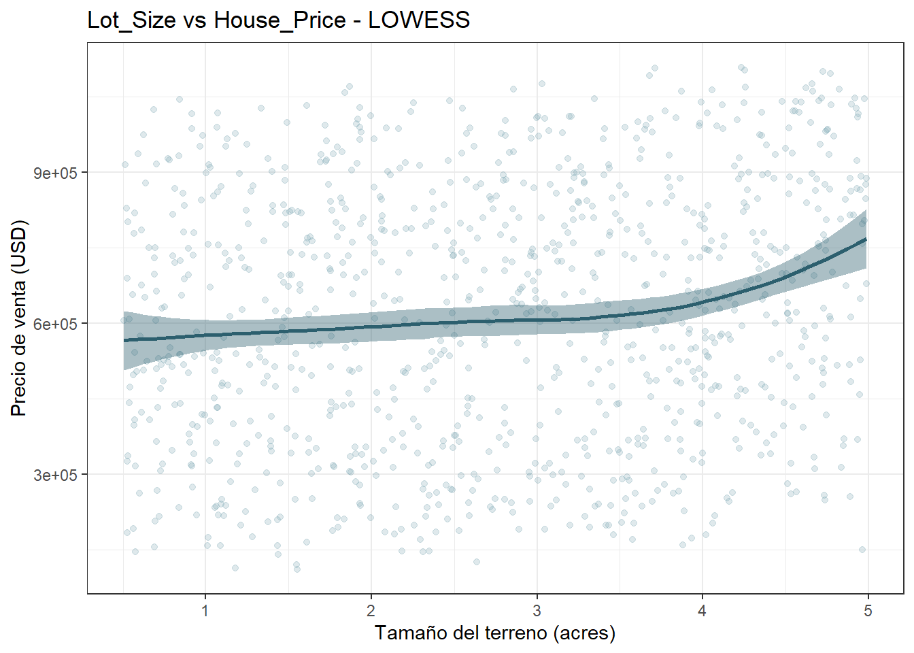
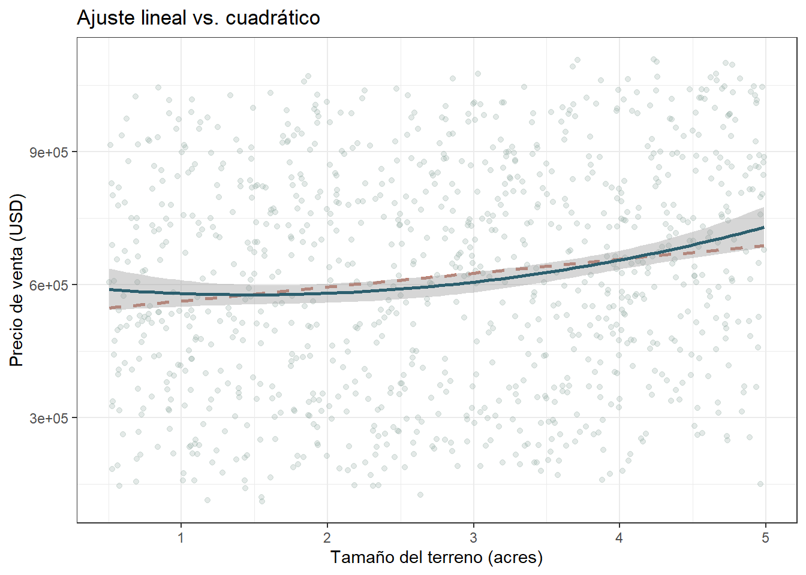

7 Evaluación de rendimientos decrecientes y umbrales de superficie
En el apartado de Análisis Exploratorio Bivariado, se encontró que el tamaño del terreno tiene que ver, de una forma modesta, con el precio de venta (r = 0.160). Saber que hay una relación no es lo mismo que saber cómo es esa relación a lo largo de todo el rango de terrenos. Teniendo en cuenta que la pregunta de investigación apunta a algo más específico (¿el precio sube al mismo ritmo sin importar qué tan grande sea el terreno, o llega un punto en el que cada acre adicional empieza a “rendir menos”?), un solo coeficiente de correlación no puede responderla, porque resume toda la relación en un número y asume, de entrada, que es una línea recta.
7.1 La curva suavizada
Se utilizarán los datos para “dibujar”, sin asumir una fórmula matemática previa, la tendencia con el suavizamiento LOWESS, construyendo una curva local que se adapta a lo que va mostrando cada tramo.
df %>%
ggplot(aes(x = Lot_Size, y = House_Price)) +
geom_point(alpha = 0.25, color = "#7fa8b5") +
geom_smooth(method = "loess", se = TRUE, color = "#2c5f6e", fill = "#2c5f6e") +
labs(title = "Lot_Size vs House_Price - LOWESS",
x = "Tamaño del terreno (acres)", y = "Precio de venta (USD)") +
theme_bw()## `geom_smooth()` using formula = 'y ~ x'
La curva no muestra desaceleración; al contrario, en el tramo final, correspondiente a los terrenos de mayor tamaño, la curva se empina. Una señal, todavía informal, de que la hipótesis de “rendimientos decrecientes” no encaja con lo que muestran estos datos.
7.2 Prueba formal de la curvatura
Una curva puede “verse” torcida a simple vista solo por la variabilidad propia de los datos y no significar nada en la estadística. Para no quedarse con una impresión visual, se compara un modelo de regresión lineal simple contra uno que incluye un término cuadrático, y se usa ANOVA para decidir si esa curvatura adicional realmente mejora el ajuste o si es una complicación innecesaria.
modelo_lineal <- lm(House_Price ~ Lot_Size, data = df)
modelo_cuadratico <- lm(House_Price ~ poly(Lot_Size, 2, raw = TRUE), data = df)
summary(modelo_lineal)$coefficients## Estimate Std. Error t value Pr(>|t|)
## (Intercept) 531797.91 18715.649 28.414612 1.299110e-130
## Lot_Size 31339.23 6104.164 5.134073 3.407766e-07## Estimate Std. Error t value Pr(>|t|)
## (Intercept) 604574.23 36099.823 16.747291 1.157697e-55
## poly(Lot_Size, 2, raw = TRUE)1 -36770.87 29548.693 -1.244416 2.136390e-01
## poly(Lot_Size, 2, raw = TRUE)2 12386.34 5258.275 2.355590 1.868621e-02df %>%
ggplot(aes(x = Lot_Size, y = House_Price)) +
geom_point(alpha = 0.25, color = "#8fa8a0") +
geom_smooth(method = "lm", formula = y ~ x, se = FALSE, color = "#c47b6b", linetype = "dashed") +
geom_smooth(method = "lm", formula = y ~ poly(x, 2), se = TRUE, color = "#2c5f6e") +
labs(title = "Ajuste lineal vs. cuadrático",
x = "Tamaño del terreno (acres)", y = "Precio de venta (USD)") +
theme_bw()
## Analysis of Variance Table
##
## Model 1: House_Price ~ Lot_Size
## Model 2: House_Price ~ poly(Lot_Size, 2, raw = TRUE)
## Res.Df RSS Df Sum of Sq F Pr(>F)
## 1 998 6.2580e+13
## 2 997 6.2233e+13 1 3.4636e+11 5.5488 0.01869 *
## ---
## Signif. codes: 0 '***' 0.001 '**' 0.01 '*' 0.05 '.' 0.1 ' ' 1data.frame(
Modelo = c("Lineal", "Cuadrático"),
R2 = c(summary(modelo_lineal)$r.squared, summary(modelo_cuadratico)$r.squared)
)## Modelo R2
## 1 Lineal 0.02573191
## 2 Cuadrático 0.031124197.3 Quintiles
Otra alternativa para mirar lo mismo, sin depender de que la curvatura tenga que ser cuadrática, es partir el rango de terrenos en cinco tramos de igual tamaño (quintiles) y comparar qué tanto sube el precio promedio de un tramo al siguiente. Si de verdad existiera una desaceleracipon, se esperaría ver que esa subida sea grande entre los primeros quintiles y se haga cada vez más pequeña hacia el final.
df <- df %>% mutate(Quintil_Lot = ntile(Lot_Size, 5))
quintiles <- df %>%
group_by(Quintil_Lot) %>%
summarise(Lot_Size_medio = mean(Lot_Size), House_Price_medio = mean(House_Price))
quintiles## # A tibble: 5 × 3
## Quintil_Lot Lot_Size_medio House_Price_medio
## <int> <dbl> <dbl>
## 1 1 0.957 564529.
## 2 2 1.89 601217.
## 3 3 2.81 624677.
## 4 4 3.69 594301.
## 5 5 4.55 709582.## [1] 39530.33 25402.79 -34466.13 134383.76Las pendientes entre quintiles consecutivos son 39.530, 25.403, -34.466 y 134.384 dólares por acre. No decrecen de forma progresiva, tres de cuatro son positivas y la última es la más grande. Recordando el coeficiente de determinación de 0.026 en el modelo lineal global, el vaivén es lo que se esperaría de una relación débil y ruidosa, no de un fenómeno económico con una forma definida.
Los tres análisis apuntan en la misma dirección. No hay evidencia de que el incremento del precio de venta se desacelere a medida que aumente el tamaño del terreno. Es digno de mencionar que hay una leve aceleración en el extremo superior del rango. Bien sí la relación entre Lot_Size y House_Price existe, es modesta y bastante pareja a lo largo de todo el rango de tamaños de terreno.